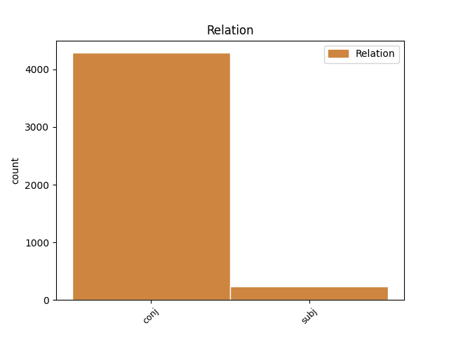
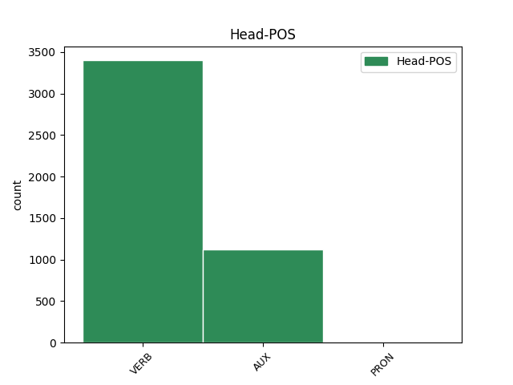
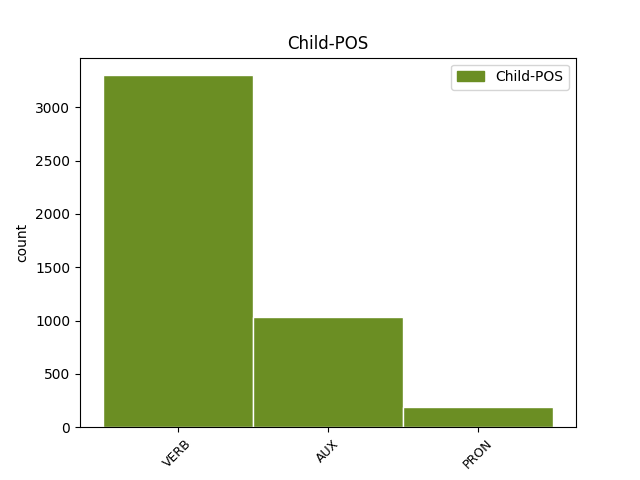

Distribution of features within this leaf



Agreement Rules sorted by frequency.
- When the dependent token is the conjunct(conj) of the head token,
1 Naproti _ _ _ _ 0 _ _ _
2 tomu _ _ _ _ 0 _ _ _
3 prvky _ _ _ _ 0 _ _ _
4 , _ _ _ _ 0 _ _ _
5 kterým _ _ _ _ 0 _ _ _
6 chybí chybět VERB VB-S---3P-AA--- Aspect=Imp|Mood=Ind|Number=Sing|Person=3|Polarity=Pos|Tense=Pres|VerbForm=Fin|Voice=Act 0 _ _ _
7 jeden _ _ _ _ 0 _ _ _
8 obvodový _ _ _ _ 0 _ _ _
9 elektron _ _ _ _ 0 _ _ _
10 do _ _ _ _ 0 _ _ _
11 úplného _ _ _ _ 0 _ _ _
12 obsazení _ _ _ _ 0 _ _ _
13 krajní _ _ _ _ 0 _ _ _
14 slupky _ _ _ _ 0 _ _ _
15 a _ _ _ _ 0 _ _ _
16 tvoří tvořit VERB VB-P---3P-AA--- Aspect=Imp|Mood=Ind|Number=Plur|Person=3|Polarity=Pos|Tense=Pres|VerbForm=Fin|Voice=Act 6 conj _ _
17 jednomocné _ _ _ _ 0 _ _ _
18 záporné _ _ _ _ 0 _ _ _
19 ionty _ _ _ _ 0 _ _ _
20 a _ _ _ _ 0 _ _ _
21 vznikající _ _ _ _ 0 _ _ _
22 připoutáním _ _ _ _ 0 _ _ _
23 dalšího _ _ _ _ 0 _ _ _
24 elektronu _ _ _ _ 0 _ _ _
25 . _ _ _ _ 0 _ _ _
1 Pokud _ _ _ _ 0 _ _ _
2 je být VERB VB-S---3P-AA--- Mood=Ind|Number=Sing|Person=3|Polarity=Pos|Tense=Pres|VerbForm=Fin|Voice=Act 0 _ _ _
3 jí on PRON PPFS2--3------- Case=Gen|Gender=Fem|Number=Sing|Person=3|PronType=Prs 2 subj _ LGloss=(ona)
4 málo _ _ _ _ 0 _ _ _
5 , _ _ _ _ 0 _ _ _
6 vytvoří _ _ _ _ 0 _ _ _
7 se _ _ _ _ 0 _ _ _
8 na _ _ _ _ 0 _ _ _
9 povrchu _ _ _ _ 0 _ _ _
10 vápenné _ _ _ _ 0 _ _ _
11 kaše _ _ _ _ 0 _ _ _
12 trhliny _ _ _ _ 0 _ _ _
13 . _ _ _ _ 0 _ _ _
Disagree Examples:
1 Podniky _ _ _ _ 0 _ _ _
2 nebudou být AUX VB-P---3F-NA--- Mood=Ind|Number=Plur|Person=3|Polarity=Neg|Tense=Fut|VerbForm=Fin|Voice=Act 0 _ _ _
3 prozatím _ _ _ _ 0 _ _ _
4 stornovávat _ _ _ _ 0 _ _ _
5 , _ _ _ _ 0 _ _ _
6 až _ _ _ _ 0 _ _ _
7 po _ _ _ _ 0 _ _ _
8 vyjádření _ _ _ _ 0 _ _ _
9 stanoviska _ _ _ _ 0 _ _ _
10 technickým _ _ _ _ 0 _ _ _
11 ředitelem _ _ _ _ 0 _ _ _
12 , _ _ _ _ 0 _ _ _
13 ale _ _ _ _ 0 _ _ _
14 předložíme předložit VERB VB-P---1P-AA--- Aspect=Perf|Mood=Ind|Number=Plur|Person=1|Polarity=Pos|Tense=Pres|VerbForm=Fin|Voice=Act 2 conj _ _
15 ve _ _ _ _ 0 _ _ _
16 spolupráci _ _ _ _ 0 _ _ _
17 s _ _ _ _ 0 _ _ _
18 PV _ _ _ _ 0 _ _ _
19 ROH _ _ _ _ 0 _ _ _
20 žádost _ _ _ _ 0 _ _ _
21 technickému _ _ _ _ 0 _ _ _
22 řediteli _ _ _ _ 0 _ _ _
23 o _ _ _ _ 0 _ _ _
24 tolerování _ _ _ _ 0 _ _ _
25 akcí _ _ _ _ 0 _ _ _
26 , _ _ _ _ 0 _ _ _
27 které _ _ _ _ 0 _ _ _
28 zajišťují _ _ _ _ 0 _ _ _
29 ozdravná _ _ _ _ 0 _ _ _
30 opatření _ _ _ _ 0 _ _ _
31 , _ _ _ _ 0 _ _ _
32 kde _ _ _ _ 0 _ _ _
33 jde _ _ _ _ 0 _ _ _
34 převážně _ _ _ _ 0 _ _ _
35 o _ _ _ _ 0 _ _ _
36 klimatizace _ _ _ _ 0 _ _ _
37 . _ _ _ _ 0 _ _ _
1 Pro _ _ _ _ 0 _ _ _
2 kontrolu _ _ _ _ 0 _ _ _
3 obsahu _ _ _ _ 0 _ _ _
4 vozu _ _ _ _ 0 _ _ _
5 přikládáme přikládat VERB VB-P---1P-AA--- Aspect=Imp|Mood=Ind|Number=Plur|Person=1|Polarity=Pos|Tense=Pres|VerbForm=Fin|Voice=Act 0 _ _ _
6 dodací _ _ _ _ 0 _ _ _
7 list _ _ _ _ 0 _ _ _
8 , _ _ _ _ 0 _ _ _
9 ložný _ _ _ _ 0 _ _ _
10 list _ _ _ _ 0 _ _ _
11 je být AUX VB-S---3P-AA--- Mood=Ind|Number=Sing|Person=3|Polarity=Pos|Tense=Pres|VerbForm=Fin|Voice=Act 5 conj _ _
12 připevněn _ _ _ _ 0 _ _ _
13 na _ _ _ _ 0 _ _ _
14 stěně _ _ _ _ 0 _ _ _
15 vozu _ _ _ _ 0 _ _ _
16 u _ _ _ _ 0 _ _ _
17 dveří _ _ _ _ 0 _ _ _
18 . _ _ _ _ 0 _ _ _
1 Dopisy _ _ _ _ 0 _ _ _
2 jsme být AUX VB-P---1P-AA--- Mood=Ind|Number=Plur|Person=1|Polarity=Pos|Tense=Pres|VerbForm=Fin|Voice=Act 0 _ _ _
3 dostali _ _ _ _ 0 _ _ _
4 , _ _ _ _ 0 _ _ _
5 * _ _ _ _ 0 _ _ _
6 Novotný _ _ _ _ 0 _ _ _
7 připraví připravit VERB VB-S---3P-AA--- Aspect=Perf|Mood=Ind|Number=Sing|Person=3|Polarity=Pos|Tense=Pres|VerbForm=Fin|Voice=Act 2 conj _ _
8 stanovisko _ _ _ _ 0 _ _ _
9 , _ _ _ _ 0 _ _ _
10 zodpovídá _ _ _ _ 0 _ _ _
11 * _ _ _ _ 0 _ _ _
12 Novotný _ _ _ _ 0 _ _ _
13 , _ _ _ _ 0 _ _ _
14 ještě _ _ _ _ 0 _ _ _
15 je _ _ _ _ 0 _ _ _
16 nutno _ _ _ _ 0 _ _ _
17 získat _ _ _ _ 0 _ _ _
18 dobrovolnice _ _ _ _ 0 _ _ _
19 z _ _ _ _ 0 _ _ _
20 jednotlivých _ _ _ _ 0 _ _ _
21 oddělení _ _ _ _ 0 _ _ _
22 , _ _ _ _ 0 _ _ _
23 aby _ _ _ _ 0 _ _ _
24 by _ _ _ _ 0 _ _ _
25 bylo _ _ _ _ 0 _ _ _
26 zajištěno _ _ _ _ 0 _ _ _
27 stravování _ _ _ _ 0 _ _ _
28 i _ _ _ _ 0 _ _ _
29 v _ _ _ _ 0 _ _ _
30 případě _ _ _ _ 0 _ _ _
31 nemoci _ _ _ _ 0 _ _ _
32 * _ _ _ _ 0 _ _ _
33 Hlavaté _ _ _ _ 0 _ _ _
34 . _ _ _ _ 0 _ _ _
1 Zájemcům _ _ _ _ 0 _ _ _
2 nabízíme nabízet VERB VB-P---1P-AA--- Aspect=Imp|Mood=Ind|Number=Plur|Person=1|Polarity=Pos|Tense=Pres|VerbForm=Fin|Voice=Act 0 _ _ _
3 tři _ _ _ _ 0 _ _ _
4 typy _ _ _ _ 0 _ _ _
5 odstředivek _ _ _ _ 0 _ _ _
6 , _ _ _ _ 0 _ _ _
7 každá _ _ _ _ 0 _ _ _
8 z _ _ _ _ 0 _ _ _
9 nich _ _ _ _ 0 _ _ _
10 má mít VERB VB-S---3P-AA--- Mood=Ind|Number=Sing|Person=3|Polarity=Pos|Tense=Pres|VerbForm=Fin|Voice=Act 2 conj _ _
11 své _ _ _ _ 0 _ _ _
12 přednosti _ _ _ _ 0 _ _ _
13 , _ _ _ _ 0 _ _ _
14 záleží _ _ _ _ 0 _ _ _
15 proto _ _ _ _ 0 _ _ _
16 na _ _ _ _ 0 _ _ _
17 vlastním _ _ _ _ 0 _ _ _
18 uvážení _ _ _ _ 0 _ _ _
19 , _ _ _ _ 0 _ _ _
20 pro _ _ _ _ 0 _ _ _
21 kterou _ _ _ _ 0 _ _ _
22 se _ _ _ _ 0 _ _ _
23 rozhodnout _ _ _ _ 0 _ _ _
24 . _ _ _ _ 0 _ _ _
1 Ve _ _ _ _ 0 _ _ _
2 hře _ _ _ _ 0 _ _ _
3 je být VERB VB-S---3P-AA--- Mood=Ind|Number=Sing|Person=3|Polarity=Pos|Tense=Pres|VerbForm=Fin|Voice=Act 0 _ _ _
4 více _ _ _ _ 0 _ _ _
5 faktorů _ _ _ _ 0 _ _ _
6 a _ _ _ _ 0 _ _ _
7 některé _ _ _ _ 0 _ _ _
8 z _ _ _ _ 0 _ _ _
9 nich _ _ _ _ 0 _ _ _
10 nemůžeme moci VERB VB-P---1P-NA--- Mood=Ind|Number=Plur|Person=1|Polarity=Neg|Tense=Pres|VerbForm=Fin|Voice=Act 3 conj _ LGloss=(mít_možnost_[něco_dělat])
11 ani _ _ _ _ 0 _ _ _
12 dobře _ _ _ _ 0 _ _ _
13 zachytit _ _ _ _ 0 _ _ _
14 , _ _ _ _ 0 _ _ _
15 ani _ _ _ _ 0 _ _ _
16 změřit _ _ _ _ 0 _ _ _
17 . _ _ _ _ 0 _ _ _